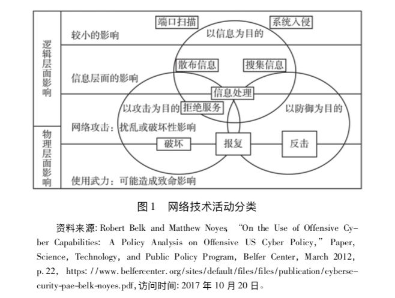
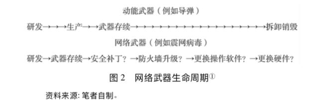
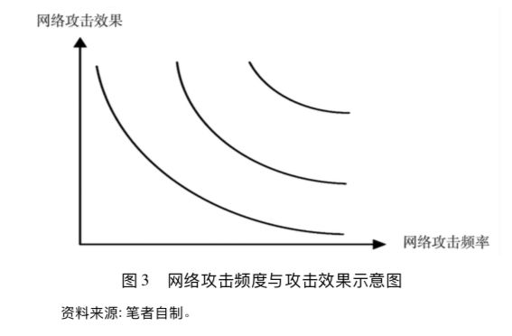
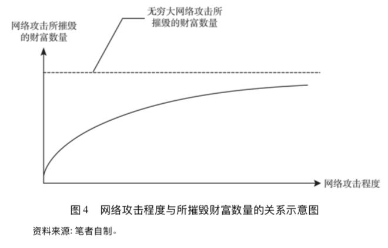

收录于合集
简
沈逸
复旦大学网络空间治理研究中心主任，研究员
江天骄
复旦大学国际关系与公共事务学院博士研究生
**
**
【摘要】 网络空间已经成为大国战略博弈的新领域。网络空间的军事化是一个难以逆转的客观趋势。目前关于网络攻防、网络威慑及其对大国战略稳定影响的讨论存在不足。一部分观点认为，归因、划线、对称报复等技术困境的存在使得网络威慑难以成立。而网络攻防失衡、进攻更占优势的结果将打破战略稳定，并导致频繁的网络战争，甚至引发冲突升级。然而，这种怀疑论和悲观论实际上模糊了不同程度的网络安全事件之间的界限，又未能全面理解网络攻防之间存在的巧妙平衡。通过对特定网络攻防技术进行区分，再结合对于重大网络安全事件的经验分析，不难发现大规模网络攻击的后果存在诸多不确定性因素，而归因问题也并非无法化解。由此一来，“向谁报复”“在何种情况下报复”以及“如何报复”这三大困扰网络威慑的问题也基本上迎刃而解。以现实主义的基本理念，务实对待和理解网络空间的攻防均衡，通过构建积极的网络威慑实现网络空间的战略稳定，在当下已经具备一定的可行性，也应该成为大国在网络空间战略互动的一个主要方向。
【关键词】 网络战;攻防平衡;网络威慑;网络安全
如何在网络空间保持大国战略稳定 ，正日趋成为各方研究者关注的主要问题。在 2016年年底结束的美国总统选举中，有关俄罗斯通过黑客攻击干扰、影响乃至最终左右选举结果的争论，进一步深化了有关网络空间行为与大国战略稳定的讨论。大国之间是否会因为网络攻击而爆发大规模的网络战并引发冲突升级是新时期网络技术革命给国际社会带来的难题，在此背景下，探讨实现网络空间战略稳定的务实路径，应该成为一项具有重要理论价值与现实意义的任务。
与核武器相比，目前网络武器的研发、实际使用以及由此带来的网络空间国家之间进攻与防御能力的建设，仍然处于发展过程之中。 如何认识网络空间进攻与防御之间的关系，是认识和理解网络空间威慑问题的关键。 本文运用攻防失衡与平衡的分析框架，展开相关的研究。在结构上，下文将回顾以往关于网络空间中进攻与防御失衡进而导致网络战频发的观点，并指出其中的矛盾和不足之处。事实上， 网络攻防之间 尽管具有非对称性，但 仍可以形成巧妙的平衡。 这种平衡为将传统的 威慑战略运用到网络空间提供了重要基础 。随后将聚焦讨论网络空间威慑的有效性问题，并指出基于务实路径在网络空间构建有效威慑不仅是可行的，也是必要的。这种威慑形成的过程可能会带来某些冲击，但总体可控。
网络战威胁及对网络攻防平衡的新认识
在现有研究中，国外学者倾向于认为网络空间的攻防力量是不平衡的，进攻方将占据比较显著的优势，网络空间中存在着进攻占据优势(offence dominance) 的情况，这连同网络技术革命和网络武器的出现一起，将从根本上改变传统国际关系中的攻防平衡(offense-defense balance) 。
进攻占优 的观点主要源于对网络空间技术特征的分析：
首先，由于存在“零日漏洞攻击(zero-day attack) ”，即在相关软件的安全补丁还未上线或是上线的同一天就遭受攻击。
其次，即使没有发生“零日漏洞攻击”，也无法保证整个网络安全系统没有瑕疵。网络防御需要构筑起一道万无一失的长城，而进攻只需要攻其一点即可突破。防范网络攻击与打击贩毒和偷渡有着许多相似之处。除非事先掌握可靠情报，否则无论投入多少，效费比都会很低。
再次，防御本身处在碎片化的风险之中。考虑到企业的声誉或是经营策略，私人部门大多不愿意在调高安全风险等级或是共享网络信息等方面与政府展开合作。甚至在遭到攻击之后，许多企业仍然选择隐瞒事实。而经济全球化也进一步加深了潜伏在供应链中的安全问题。许多设备在海外制造的过程中极有可能被植入病毒。此外，网络武器可以通过直接复制或变异的方法快速扩散。跨国犯罪集团和黑客地下产业链导致恶意软件的扩散渠道更加畅通，获得网络武器的门槛变得更低。
最后，网络归因困难重重。随着各种加密、代理技术的发展 ，要成功定位攻击发起者并予以及时的还击几乎难以实现。如果单纯从技术角度分析，在网络空间中既不能通过构筑坚不可摧的防御来拒止敌人的进攻，又无法借助强有力的报复手段来慑止隐匿攻击。进攻的一方享有天然的优势，而防御的一方则显得有些先天不足。
进攻占优的观点将刺激各国发起网络军备竞赛 ，加深安全困境。在网络技术革命之前，国家间通过明确一系列基本共识、原则和法律制度在一定程度上缓解了国际社会无政府状态的影响。而在进攻占优的观念主导下，网络技术似乎给试图颠覆现行秩序的行为体带来了机会。各国都尚未充分理解网络武器的意义和用相应的法律去规制这一武器的使用， 在缺乏有效威慑的情况下，网络战将会成为诱人的战略选择。 国家行为体将倾向于选择通过大规模网络攻击而非传统的外交以及军事活动，“兵不血刃”地破坏对方的安全、经济和社会发展 。尤其对发达国家来说 ，由于其过分依赖网络系统 ，网络攻击能够以非常低的成本造成巨大的损失，从而使原本实力弱小的国家或非国家行为体更容易借助这种 不对称优势 向大国发起挑战。
此外，网络武器又易于扩散，大幅增加意外战争的可能性。在传统领域，信心建立措施(CBM) 、外交热线和其他一系列规范有助于缓解紧张局势、避免冲突升级，而关于网络空间的沟通和协调可能非常模糊。由于国家间彼此难以摸清对方的真实意图，误判的可能性增加。在竞争对手之间，认为自身占据进攻优势的一方很有可能采取先 发制人的行动。总体上，如果难以建立有效的威慑，国家间网络战争的发生将变得频 繁，国家遭受大规模网络攻击的可能性将急剧上升。网络空间的攻防失衡很有可能 破坏战略稳定并危及整个国际秩序。
如果上述判断成立，那么其推导出的结论应该是当前世界范围内主权国家之间在网络空间中将持续发生显著的对抗，甚至是某种形式的网络战争。但经验观察的数据并不支撑这样的判断， 最为常见的现象，仍然是网络犯罪、网络间谍、网络黑客等很难归因于攻防失衡的低烈度的网络安全事件 (cyber incident) 屡屡发生。
为何国家间并没有像攻防失衡论者所预计的那样爆发频繁的网络战争?
从实践看，在大量的案例中，网络战的威胁被有意或无意地夸大(threat inflation)，对网络攻击概念的泛化使用导致了 对于实施网络攻击难度的低估 ，最典型的表现就是混淆了网络攻击和网络利用这两类相似但存在重大区别的活动。根据美国国防部、参谋长联席会议等发布的文件来看，国家安全战略框架下的网络攻击(CNA)和网络利用(CNE)这两种类型的行动是这样被定义的：网络攻击是指由计算机网络发起或针对计算机网络而进行的各种扰乱、禁止访问、破坏和摧毁计算机信息的行动(攻击分类如表1所示) 。在攻击过程中，不仅包含对于数据的破坏和操控，而且强调由此产生的后果，特别是通过攻击行动造成的物理毁伤，包括关键基础设施的破坏以及人员的伤亡。网络利用更多是指利用网络进行侦查、干扰、窃取信息等活动，日常生活中被广泛报道的案例绝大多数属于此类行动。虽然与网络攻击在技术、手段甚至是某些外部表现形式上存在相似性，但仍然应当区别对待。
表 1 网络攻击的类型
攻击类型
|
描述
|
主要特征
|
潜在目标
|
案例
—|—|—|—|—
僵尸程序 或 DDoS攻击
|
通过控制大量系统发 起集中访问，使目标 网络连接中断
|
成本较低; 技术门槛 不高; 效果仅局限于 中断访问而不能造成 物理损伤
|
大部分网络
|
2008 年，俄格冲突中 俄罗斯中断了格鲁吉 亚政府网站的连接
普通恶意 软件
|
利用漏洞入侵、传输 数据或扰乱系统正常 运行
|
成本较低; 对防护较 弱的系统适用
|
大部分计算机 或网络
|
计算机病毒、钓鱼软 件、蠕虫病毒
高级恶意 软件
|
利用漏洞入侵、传输 数据或扰乱系统正常 运行
|
成本较高; 技术门槛 高; 能够入侵防护级 别较高甚至与外部网 络隔绝的系统; 同时 可能造成连锁反应
|
重点基础设施
|
震网病毒对伊朗的浓 缩铀离心机造成了 破坏
资料来源: 笔者自制。
从国家安全的角度来看， 利用网络进行侦查、干扰、窃取信息 或者 发动分布式拒绝服务攻击 (DDoS) 与 利用网络对关键基础设施造成严重破坏的网络攻击 是性质完全不同的事件(见图1) 。

仅认定网络攻击技术的高速发展就会自动导致滥用网络攻击能力实施网络战的论点并没有得到实际案例的支撑。从2001年至2011年，地缘竞争对手在网络冲突事件中不仅没有发生擦枪走火，反而表现出了自我克制。这种克制很大程度上是源于网络攻击的门槛。关于震网病毒的案例研究表明，实施有效的威胁国家安全的战略级网络攻击的成本巨大且门槛极高。该网络武器的研制与实施过程远非 轻而易举。
首先，需要通过搜集情报理解复杂的工业控制系统并发现可以利用的漏洞; 然后设法将网络武器放置到与外界隔绝的系统当中并确保能够按时引爆，还要对此进行反复的实验。这样庞大的工程需要大量的人力、物力、财力和先进技术的保障。 战略网络战 与普通的网络攻击或是黑客活动相去甚远，需要对于不同的攻击目标定制不同的网络武器，投入高、研发周期长且需要具有相当的试验条件(例如离心机) ， 非网络强国几乎难以实现 。此外，战略网络攻击被曝光的风险也很高。而所谓的奇袭( 例如珍珠港事件、九一一事件等) 总是伴随着许多偶然因素，在很大程度上，事件中的有利条件(例如遗漏重要情报) 往往源于对手的各种失误。所以，战略级网络攻击的成功还有赖于网络空间以外的大量因素。即便个别国家不惜一切代价成功研制了高级恶意软件并能够顺利实施计划，网络武器的战略作用究竟有多大仍值得怀疑。在这种情况下，频繁发动大规模网络攻击既不明智也不现实。
因此，当务之急是要形成新的认知框架，客观评估网络攻防的平衡状态，从而对于网络空间中的特定活动——如网络进攻、网络防御、网络利用等——形成共同的理解和预期。
对网络攻防 平衡的新认识
与传统的关于进攻占据优势的认知不同的是，网络攻击的后果存在着局限性和不确定性。事实上， 频繁的网络攻击 反而有利于防御方进行能力建设，甚至 有可能帮助防御方解决 对网络攻击的归因问题 。有一些学者提出归因问题完全无法解决，也有观点认为归因更多反映的是政治问题而非技术问题。所谓 归因就是国家认为它是什么(attribution is what states make of it) 。许多方法可以有助于化解归因困境。
首先，可以对 遭受攻击的情况 进行分析，小 规模 的攻击不太可能是为了政治施压，大规模的攻击不太可能是意外，隐蔽性强的攻击可能是意在窃取数据。如果运用过多的 资源 进行攻击，则意味着攻击者可能是单独行动，而不具备组织化程度，因为组织强调效率。为了提升攻击效率，攻击者可能重复使用相关恶意软件或采取熟悉的攻击 手法 ，这种特征暴露了攻击行为。而通过长期观察攻击的 时间 以及间隔，攻击者所在的时区和位置很有可能被探查到，攻击越多越容易暴露马脚。攻击过程中可能留下的自然 语言信息 也有可能暴露攻击者的身份。上文已经谈到，由于针对特定复杂系统进行攻击的任务难度较高，许多个人和组织自然被排除在外。同时又需要针对复杂系统搜集大量前期的情报工作，这一环节也很有可能暴露行动。网络攻击很有可能是大规模行动的一个环节，因此通过考察整个地缘政治态势也能发现端倪(例如爱沙尼亚和格鲁吉亚事件) 。即便归因不是完全正确，公布一些调查报告或者发布所谓的证据仍然可以对攻击者造成外交和心理上的压力。通过 污名化策略 (naming and shaming) 可以打击对手的国际声誉和软实力，从而在一定程度上起到反制作用。尽管归因能力越强越好，但在没有绝对把握的情况下仍然可以结合具体情况采取相应措施。
其次，若要通过网络攻击施加持续的影响力，则必须要与其他手段相结合，网络武器单独使用的战略有效性本质上是有限的。网络作为军事行动的倍增器能够发挥强大的辅助作用，但在没有传统军事行动配合的情况下，仅仅依靠网络无法实施占领，也不可能迫使对方投降 。大部分网络攻击可以被快速修复。 与核武器所造成的致命效果不同，各方对网络武器究竟能造成多大的破坏力并没有清晰的共识。 网络武器具有生命周期短且后果不确定的特点(见图2)。不同类型的攻击具有不同的功效衰退率。如果某种攻击手法的知名度很高(例如震网病毒)，那么相关漏洞也会很快被修复; 而网络牟利活动由于长期不容易被发现，因此衰退率比较低。还存在着许多其他导致网络攻击可能无效的原因，例如在阿富汗战争中，美国的网络攻击作用不大，因为对手并不依赖于网络系统。网络攻击也并非如宣称的那样是精确打击武器。网络攻击后果的不确定性，包括武器扩散、连锁反应等，都很有可能波及第三方并造成附带毁伤。震网病毒被发现后，许多系统又遭受被改编过的病毒的袭击，造成了严重的级联效应(cascade effect) 。而在网络空间互联互通的背景下，大规模网络攻击所带来的严重后果很有可能反噬攻击者自身。 虽然匿名使得攻击看似不对称，但大规模网络攻击的反作用是对称的。 尤其如中美两国一般，在经济金融高度相互依存的情况下，任何一方遭受网络攻击同样会给另一方的经济金融发展带来冲击。这种不确定性和反噬作用使得大规模网络攻击成为某种程度上自我遏制的武器。

网络攻击仍然是可以防御的，遭受攻击之后可以具备有效的恢复能力。防御方可以通过设置多个防御层次和大量的系统冗余，尽可能减缓攻击速度，为检测和应对争取时间。当攻击者需要采取包括搜集信息、研发武器、植入并释放武器等一系列步骤时，防御方可以在任何步骤发现并采取行动。同时，防御方还可以巧妙地利用欺骗战术迷惑对手。网络空间的复杂特征对于进攻方来说同样意味着许多困难和不确定因素。防御方可以通过设置“蜜罐”等技术手段 ，使攻击者担忧到处都布满陷阱，从而迷失方向，并最终服务于攻击检测、归因和关键基础设施的防护。考虑到最有价值的攻击目标往往是最为复杂的，而攻击成本和被发现的风险极大，攻击者就很有可能转向那些低风险、低回报的目标。事实上，任何作战领域都不存在所谓完美(perfect) 的防御， 只有建立妥善(good enough) 的防御体系 ，使其足以承受一定程度的损伤并能够快速得到修复，从而继续作战 。所以， 冗余、欺骗和快速恢复的弹性使得网络防御并非不堪一击 。例如网络并未在2008年的俄罗斯与格鲁吉亚冲突中起到决定性作用。格鲁吉亚通过改变其在美国服务器上的网站的主机，将其移动到光纤连接带宽更宽、系统管理员更机敏的环境中，成功避开了 DDoS 攻击而即便是震网病毒也没有迫使伊朗放弃核计划，反而使其迅速强化了自身网络部队的建设。而 网络攻防平衡最为核心的一点 还在于对手会通过 修复被攻击的漏洞 而 降低自身系统的脆弱性 。发动网络攻击的过程其实也是帮助对手揭示其系统漏洞的过程。由于网络防御能力的差别，相同频度的网络攻击也会产生不同的攻击效果(如图 3) 。

网络攻击与网络防御之间事实上存在着巧妙的平衡与辩证统一。网络攻防的水平不断提升，网络武器越强大，网络防御的意识也越高。进攻方对网络技术隐蔽、快速的特点进行利用，防御方则通过欺骗、设置冗余和快速修复进行应对。尽管越来越多的国家建立起网络部队并将网络武器投入实战，但这同时引起了更多国家对网络安全的重视，并在此基础上凝聚共识、制定规则。许多非国家行为体对网络攻击的参与也唤起了社会中各行各业广泛的网络安全意识，以期共同应对网络威胁。尽管网络武器有着不同寻常的效用，但单纯依靠网络攻击即可将对手一击即溃的论调更多属于假想。网络力量所具有的真正战略意义是创造有利于己方而不利于对手的环境，即通过战术网络战发挥作用。当 网络与其他手段相结合 时，真正具有决定性意义的是通过 灵活的军事战略原则和排兵布阵 ，最大限度地发挥自身作战优势，打击对手的弱点。
虽然目前在网络空间攻击和防御之间仍然是非对称的，攻击相比防御仍然具有一定的优势，但在国家安全框架下来看，攻击和防御仍然是相对平衡的，并没有出现攻击方占据压倒性优势从而单方面改变游戏规则的现象。
网络威慑的实现路径
在网络攻防平衡的前提下，传统威慑理论在网络空间中的运用得到确立。 威慑的核心环节是劝服(convince) 对手，使其相信采取行动的后果是不利的 。清晰地表达意图并展示相应的实力是关键所在。而产生这种心理效果的前提是信息对称，即双方对于进攻、防御以及报复的效果都有比较清晰的认识，可以计算出利弊得失。威慑主要分为拒止和报复两大类。所谓 拒止 就是 通过足够强大的防御来削弱对手进攻成功的可能性 、 减少其进攻得手所带来的收益 ，但拒止需要付出巨大的防御成本; 而 报复 则是 通过给对手的攻击行为施加严重的后果，使其不愿付出可怕的代价而放弃行动 。随着军事技术的发展，防御的漏洞变得越来越明显。到了第二次世界大战时期，闪电战、进攻崇拜成为军事作战领域的新潮流。冷战时期，由于核打击几乎无法防御，更多的战略重心于是放在了报复威慑上，即通过相互确保摧毁来避免战争的发生。尽管如此，冷战中后期，美苏两国仍然通过建立导弹防御获取一定程度的拒止威慑，试图打破所谓的恐怖平衡。冷战结束后，威慑仍然是21世纪美国国家安全战略的核心。为了应对更加复杂的安全威胁，美国在2003年又提出了定制型威慑(tailored deterrence)的概念，即根据对手不同的身份、利益、认知以及决策过程，在不同的背景下施加相应的威慑手段，最终影响对手的利益计算。从 2011年至 2015年，美国白宫和国防部陆续发布《网络空间国际战略》和《网络空间行动战略》及其修订版本，这些文件将传统威慑战略引入网络空间。
在网络空间中， 报复威慑 主要涉及“ 向谁报复”“在何种情况下报复”以及“如 何报复 ”三个方面的问题。在一定的情况下，报复威慑可以通过划定较为清晰的威慑目标、设定可靠的报复门槛、建立和展示可信的报复力量予以确立。
具体而言，首先，关于 “向谁报复” 的问题。威慑的对象 应该是那些 企图利用网络袭击本国的对手 。这种网络袭击的严重程度应当与军事行动可能造成的后果基本相当。所以威慑的对象必须符合两点:(1)明确的敌人;(2)严重的大规模网络攻击。
一些批评网络威慑不可行的观点实际上错误地将威慑对象扩大化了：网络黑客、网络间谍(牟利)、网络犯罪等活动既不一定是敌人所为，所采用的隐匿攻击或分布式拒绝服务攻击也一般无法造成严重的后果。没有达到直接影响国家安全的程度，不在威慑的范围之列。
网络恐怖主义是否属于威慑对象同样值得怀疑：恐怖组织也会利用网络进行黑客攻击，但研发复杂的高级网络武器并实施大规模网络攻击对于恐怖组织来说性价比不高，也未必能够造成所期望的恐怖效果。
网络威慑所需要应对的大规模网络攻击基本不会受到归因问题的困扰：网络攻击与现实世界有着密切的关联，即为何要发动网络战。所谓战争，就是己方通过运用实力(进攻或防御)、发出威胁(威慑或威逼)或所谓的影子战争(例如外交手段)迫使对手去做己方想要做的事。战争是政治的延续，清楚地表达政治目的，不同目的伴随着不同的网络攻击形式。如果是试图通过网络施压或者结合网络采取军事行动，那么依靠隐匿攻击无法实现其政治目的。
其次，关于“ 在何种情况下报复 ”的问题。威慑的目标是劝阻敌人不要发动大规模的网络攻击，那么时不时在重大利益问题上宣示报复政策，将报复的门槛设置得高一些是明智的。 小规模的网络攻击、网络黑客或是网络间谍行为不在报复对象之列 。因为这些行为没有达到需要报复的门槛，实施威慑的一方在一些小规模的网络攻击问题上不做出回应并不会削弱其报复政策的可信度。而从潜在攻击者的角度来说，也不会频繁发动报复门槛以下的一般性网络攻击，因为这样做反而会帮助对手修复漏洞、提升防御力甚至暴露自己。
最后，关于“ 如何报复 ”的问题，为了使报复可信，必须展示(demonstrate)足够的报复力量。如果国家间的网络武器和网络行动都秘密进行，反而导致报复威慑的可信度降低。适当炫耀武力——“秀肌肉(brandishing)”——有助于提升报复威慑的可信度。展示能够反复侵入对手敏感网络系统的能力，将使对手感知到己方强大的网络实力，揭示对手的系统漏洞并成功渗透，可以削弱对手对自身网络实力的信心。此外，大部分敏感系统都加固了防御措施并与外界隔绝，而高强度的侵入方式可能导致冲突升级。所以“炫耀武力”同样存在一定的挑战和风险。其次， 报复威慑的可信 度 还取决于本国在网络安全问题上一贯的行为模式、他国对本国整体的军事科技水平的认知(本国军事力量的国际声望)以及在特定情况下使用网络武器的可能性。美国通过公开宣示威慑政策、发动震网病毒攻击并开展大量网络战演习，已经充分展示了强大的网络实力。美国使用震网病毒一事并没有在美国国内遭受广泛质疑，就连美国国防高级研究计划局(DARPA)被披露正在研发网络武器一事也没有受到谴责。与此同时，英国和加拿大等国家也表示支持网络先发制人的策略。2016年，美国和英国公开宣布对“伊斯兰国”发动网络攻击。而此前俄罗斯被指对爱沙尼亚和格鲁吉亚发动的网络攻击同样展示了其强大的网络实力，从而提升了网络威慑的可信度。
同时，可信的报复力量应当 结合不同类型的威胁定制不同的报复工 具 ，将威慑政策、法律手段、外交手段、经济制裁、网络攻击甚至传统军事手段混合使用，才能灵活应对各种挑战。如跨域威慑(cross domain deterrence)能起到更好的效果，比如网络反击显然是无法应对网络间谍行为的。通过提高对手的经济成本，包括使用制裁、关税和外交施压等工具，或许比网络反击更能从根本上影响对手的行为。而在威慑大规模网络攻击的问题上，跨域威慑迫使对手顾忌报复手段的不确定性。为了规避遭受大规模报复的风险，对手往往会选择稳妥的攻击方式或者干脆放弃攻击。 美国 的威慑战略中没有具体明确报复的手段，而是 采取一种 战略模糊 (calculated ambiguity)，将多种手段组合到一起，从中选择最合适的报复方式。美国国防部国防科学委员会在其2013年发布的《弹性军事系统与高级网络威胁》报告中指出，为应对高级别的网络威胁，美国将不惜动用网络力量、常规力量甚至核力量来维护安全利益。而俄罗斯对大规模网络攻击的立场同样是会选择任何战略武器进行回应。英国和法国也将严重的网络攻击等同于传统军事行动，并保留在极端情况下动用战略武器进行反击的权利。
此外， 拒止威慑 的效用及其必要性也不容忽视。毕竟报复威慑并非万灵药，报复威慑也不能被指望用来应对更加广泛的网络黑客、网络牟利、网络抗争等行为。尽管网络大国之间仍然可能由于缺乏透明度而导致战略互疑、军备竞赛和误判，万一报复失灵，良好的防御总是可以尽量将损失减少到最小。在网络空间中，拒止和报复作为威慑战略的两种形态是相互补充、辩证统一的关系。 攻防双方的拒止和报复存在互动关系 。对手的防御越弱，己方报复的可信度也就越高。所以高度可信的威慑战略需要同时兼顾拒止和报复能力的建设。由于大部分网络攻击都是利用系统漏洞发起的，所遭受的网络攻击的严重程度也就取决于自身的能力建设。网络威慑与核威慑的一大区别就在于网络防御可行而且必要。 报复威慑可以减少网络防御的资金投入，反过来网络防御也可以提升报复威慑的可信度 。优秀的归因能力显然是网络防御的重点之一，归因能力越强越好，使得普通攻击基本无效，同时又确保了实施反击的可能性，进一步强化了报复威慑的可信度。美国《国防科学委员会网络威慑专题小组最终报告》明确指出，网络威慑需要结合报复能力和网络弹性，包括对网络攻击的归因能力、关键基础设施的恢复能力以及其他重要的网络安全创新技术。人们可能无法清楚地区分对手没有发动攻击究竟是因为担心被报复还是因为防御抵消了攻击的效果。这就像学界至今无法明确界定威慑究竟何时有效、何时失效一样，但至少战争在总体上被避免了。
在上述网络威慑的框架下，根据国家对网络的依赖程度和常规军事实力大致可以划分出 四类国家 :依赖网络且拥有强大的常规军事实力(A类);依赖网络但常规军事实力较弱(B类);不依赖网络但拥有较强的常规军事实力(C类);不依赖网络且常规军事实力较弱(D类)。其中，国家对网络的依赖程度是一个重要的指标，可以参考国际电信联盟(ITU)发布的《衡量全球信息社会发展水平报告》(Measuring the Information Society)。网络攻击的程度越严重，所能够摧毁的社会财富数量越大，但最终趋向于一个定值。这个值的大小是由不同国家对网络不同的依赖程度所决定的(如图4)。

在上述四类国家中，D类国家一般不具备较强的网络攻防能力，同时由于军事实力有限也难向大国发起网络攻击。因此，这里主要探讨A类国家之间以及A类国家与B类和C类国家可能发生网络冲突的情景。 A类国家与B类国家之间 的网络冲突最为接近的案例是俄罗斯被指对爱沙尼亚发动网络攻击。由于攻击已经发动，所以在这个案例中威慑其实是失效的。但俄罗斯所展示出的强大实力为其今后威慑其他B类国家增强了可信度。由于B类国家依赖于网络，所以只要对手具备强大的网络进攻能力，那么后果往往极其严重。再加上在常规军事冲突中处于下风，所以B类国家在与A类国家的对抗中居于劣势。反过来A类国家对于B类国家的网络威慑也就有效。 A类国家与C类国家 间的网络冲突最为相似的案例是朝鲜被指入侵索尼影业而遭到美国实施“断网”打击。C类国家虽然不依赖于网络，但可能拥有较强的网络进攻能力，且军事实力较强。当A类国家遭到C类国家的网络攻击后，反制措施的选择余地其实有限。因为对手不依赖网络，所以网络反击的效果不大。由于对手军事实力较强，为了避免冲突升级(尤其在朝鲜的案例中要避免迫使对方运用战略武器)，A类国家必须控制反击的力度，将冲突升级的主导权掌握在自己手中，但为了确保威慑的可信度又必须采取明确的报复措施。因此发动网络反击既可以展示报复的决心，又不会因为造成严重后果而导致冲突升级。如果对手不为所动、持续攻击，那么A类国家仍然可以选择其他更加严厉的手段进行报复。因为有了上一轮的铺垫，此时宣示进一步报复的可信度也更高。而只要展示出强大的网络实力、制定灵活的应对策略并宣示坚定的威慑意图， A类国家间 爆发大规模网络冲突的可能性就会较低。根据网络攻防平衡的关系，一般性的网络攻击都无法对双方产生较大的影响，而攻击越频繁则越有可能强化对手且暴露自己，因此双方都会保持审慎和克制。由于双方都依赖网络，发动大规模网络攻击可能获得暂时的优势，但考虑到双方的军事实力对比大致处于平衡状态，为了避免对手大规模报复所引发的灾难性后果，大规模网络攻击仍然会被慑止。
结论
决策的关键还是要落实到人的思考和判断上。只要各国逐步形成准确的关于 网络空间的共有知识 ，并采取恰当的网络威慑战略，网络技术革命就不会危及大国战略稳定或颠覆国际秩序。共有知识的内涵包括对网络攻防、归因和其他网络活动的技术特征及其政治后果的共同理解和预期。能否形成共同的理解和预期将最终导致完全不同的国家行为模式：信奉网络进攻占优思想的国家会倾向于先发制人，试图通过速战速决的方式赢得胜利，并导致网络战的频率增加。然而，网络攻防之间存在着辩证统一的关系。低烈度的网络安全事件可能十分普遍，但网络战基本是在双方甚至多方战略互动和政治博弈的大框架下进行。以突然袭击方式发起网络攻击的构想实际上效果有限，门槛较高，后果难以控制，因为传统军事行动中信息不对称，且网络空间快速变化。 这种不确定 性使得单纯的网络攻击难以产生致命的效果，也就 无法从根本上改变国家间的力量对比 。因此，如果能够在网络攻防平衡等关键问题上形成准确的共有知识，将可避免各国发动投机性的冒险行为或在受到攻击而归因能力有限时采取过度反应。
本文认为，如果能够进行有效的认知建构，各国将对于不同网络攻击可能造成的后果形成一致的预期，即较易实施的低技术水平的网络攻击一般情况下难以造成物理毁伤，频繁使用不仅暴露自己而且会强化对手;大规模的网络攻击成本和风险极高，也未必能够改变国家间的力量对比，需要审慎评估。 这种共有知识通过不断的磋商和交流长期积累，最终形成一种信息共享和约束机制。 其目的是规范国家行为，避免归因能力有限时的过度反应以及投机性的冒险行动，进而确保在网络空间构建最基本的战略稳定。
对于网络攻防平衡的认识很大程度上化解了传统威慑战略，尤其是报复型威慑在网络空间中所面临的障碍。当面临大规模网络攻击时，归因问题往往不言自明，大幅度压缩了基于一厢情愿思维模式或者错误信息实施投机性先发制人攻击的空间，而由于网络攻防平衡的态势，网络攻击的自我遏制消除了划线困境，通过适度的“炫耀武力”并结合“跨域威慑”的报复手段可以提升网络威慑的可信度。在网络威慑的框架下，报复和拒止作为威慑的两种形式存在辩证统一的关系。由于报复型威慑难以排除意外战争或是非理性行为的风险，良好的防御依然可以作为必要的补充来减小损失。而强大的网络防御能力本身又可以提升报复的可信度，从而慑止潜在对手。由于冲突升级的结果仍然受制于国际关系中的传统因素，即便发生网络战，也往往是在大国攻击小国的过程中发挥作用。小国由于实力有限，而网络并不能彻底改变力量对比，所以以弱胜强的可能性很小。网络技术的发展进一步拉大了国家间力量对比的不平衡。目前的网络战案例也都支持这一判断。因此，大国对大国以及大国对小国能够确立网络威慑，尤其当对方也依赖于网络时。可靠的网络威慑也取决于国家自身能力的建设。各国可以通过政策宣示自身的网络核心利益，明确不同程度的网络攻击可能面临的反制措施，并围绕这些问题形成长期的沟通协调机制，进而维护长期战略稳定。
注：文章有删减，详见原文。
文章来源：《世界经济与政治》2018年第2期
筛选：里仝 编辑：诗夏 敖遊
学人约稿与入群邀请
**
**